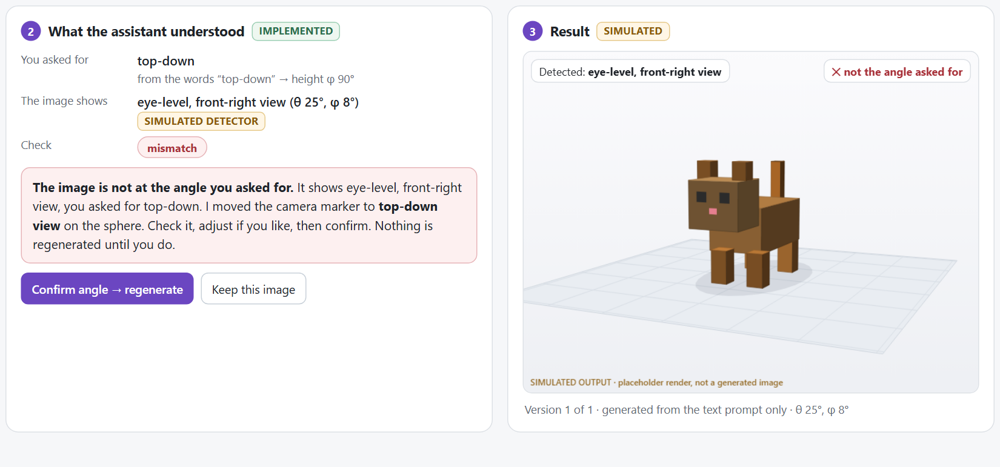
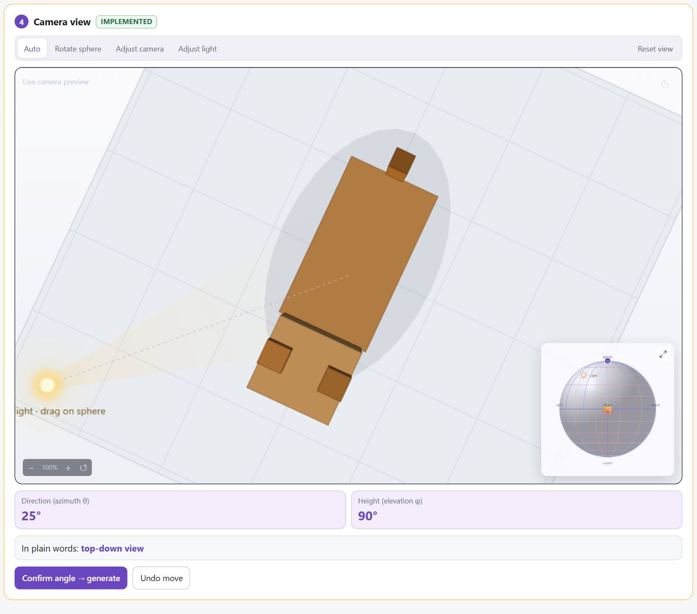
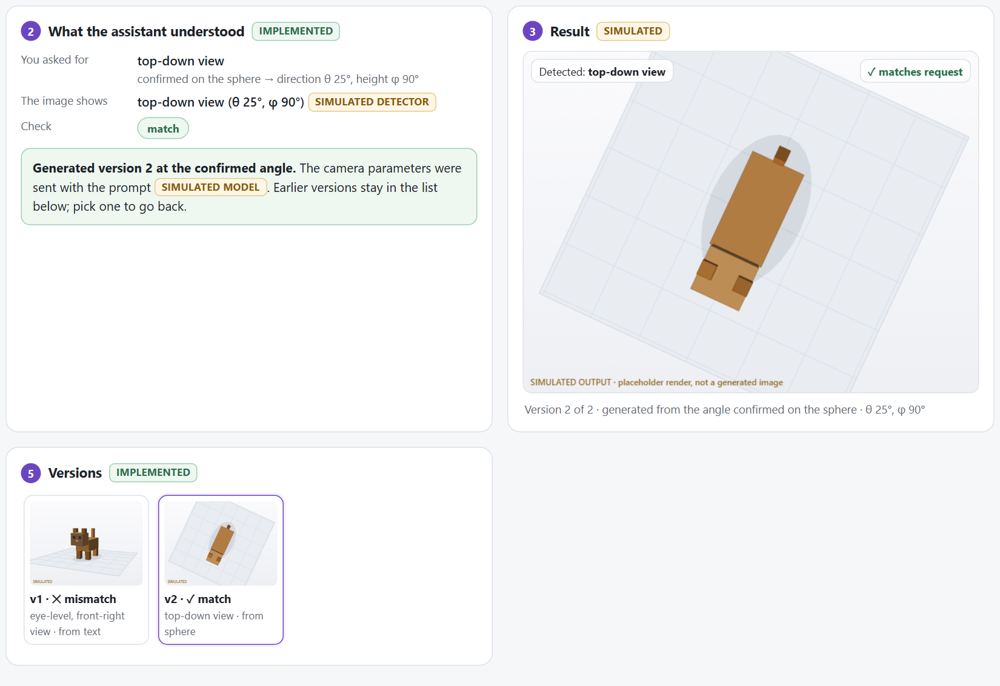

1Write the prompt
Person doesTypes “…cat on a carpet, top-down view” and presses Generate.
System doesReads the viewpoint word “top-down” as height φ 90° implemented.
Person seesThe prompt, and a note that nothing has been generated yet.

Person wants a top-down photo of a cat. The assistant checks the angle, flags the mismatch and lets the person confirm the fix.
Frames are screenshots of prototype/index.html (day mode). implemented runs in the prototype · simulated stand-in for the image model and the viewpoint detector (placeholder 3D render).



Viewpoint Assistant · Assignment 2 · every image in the frames is a simulated placeholder, not a generated image.